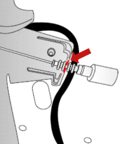

7025DA Check that the hood housing opening control cable is correctly positioned
- Path
- Test > 70 FITTINGS > 7025 COMPARTMENT COVERS > 7025D HOOD HOUSING COMPARTMENT COVER > 7025DA Check that the hood housing opening control cable is correctly positioned
- Kind
- test / check procedure
- Applies to
- engines: 2.2 JTS, 3.2 JTS; all production periods; only with equipment: Spider
- Interactive page
- https://sloeber94.github.io/elrnDB-aBrrSpdr/en/#/946003191
Applies to: engines: 2.2 JTS, 3.2 JTS; all production periods; only with equipment: Spider
STEP | CHECK TO BE PERFORMED | REMEDIAL ACTION IF THE CHECK IS NOT OK |
|---|---|---|
1 | Check for correct positioning Check that the position of the hood housing opening control cable matches the 2nd groove in the special bracket housing as illustrated. | Restore the correct position or replace the control cable Op. 7025D22 HOOD HOUSING COMPARTMENT COVER OPENING CONTROL, LEFT AND RIGHT - R.R. |
